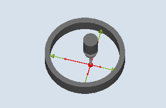

Using this measurement version, the following data can be calibrated:
Inclined position of the workpiece probe
Trigger values
Radius of the probe in a calibration ring (in axes of the plane)
The probe calibration in the ring can be on the basis of an unknown or known center point in the ring. With known center point, this corresponds to the starting position.
Calibration is also possible taking into account a starting angle when using the "Start at ring center" calibration method. Any obstacles in the measuring path or at the measuring point can be avoided when using a starting angle.
Calibration always starts in the positive direction of the 1st axis of the actual machining plane. Eight calibration positions are to be acquired, divided into two passes. Depending on the probe type, the passes are made with a uniform spindle position or a reversal of 180 degrees.
During the calibration process, the center point of the calibration ring (corresponding to the calibration method) and its distance to the starting position are determined.
The calibration data / trigger values are significantly influenced in the result by the following variables:
Physical probe ball radius
Design of the probe
Measuring velocity
Calibration ring with corresponding accuracy
Correct mounting of the calibrating ring

Calibrate: Radius in ring (CYCLE976)
The following requirements must be fulfilled for calibration in the ring:
The probe must be active as tool.
Probe type:
3D multi probe (type 710)
Mono probe (type 712)
Star-type probe (type 714)
| Note |
In connection with mono probes, star-type probes and the calibration method "Start point in ring center "NO"", an SPOS-capable spindle is required. |
| Note |
The arms of a star-type probe (type 714) must be positioned at 90 degree angle to each other. |
The exact diameter of the calibration ring is known.
If the measuring cycle is not started at the center of the ring, the workpiece probe sphere center must be positioned close to the center of the ring as well as to a calibration height within the calibration ring.
When starting the measuring cycle at the center of the ring, the workpiece probe sphere center must be positioned precisely at the ring center point as well as at a calibration height within the calibration ring.
When calibration is complete, the probe center is at calibration height in the center of the ring.
| Note |
For extremely high demands placed on the measuring accuracy, it makes sense to accept the distance between the center point and starting position in the work offset and to perform an additional calibration using this optimization. |
See also:
Calibrate: radius in ring (CYCLE976)